Your media.
Your channels.
MosaicTV turns your shows, movies and music into 24/7 channels that run like real TV — station breaks, up-next cards, a broadcast clock and a guide — and plays them in Plex, Jellyfin, Emby, any IPTV app, or right in your browser.
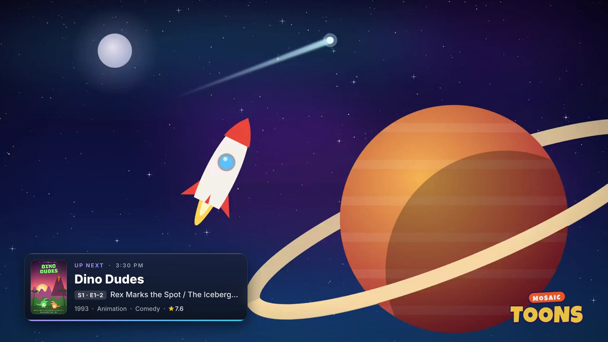
Click the picture or press ↑ ↓ to flip. Every frame is a real MosaicTV stream, from a library of made-up shows.
Every channel, live, on one screen.
The dashboard shows what every channel is airing this minute, over its artwork, with what's on next and the guide for the next few hours. Click a picture and you're watching it.
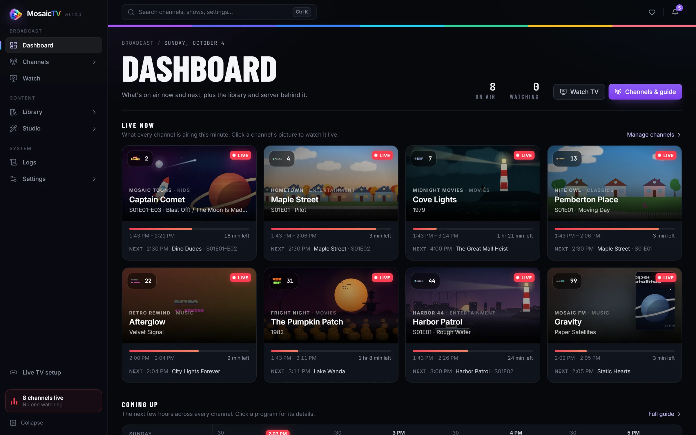
Cartoons air as the half-hours they were.
Plenty of classic cartoons were made as shorts: a half-hour was three seven-minute stories, or two with another show's short in the middle. Your files list each short as its own episode, so most tools air them as slivers, shuffled apart. MosaicTV puts them back together.
Captain Comet, Saturday 2:00 PM
Group them once. They air together forever.
- Suggest groupings packs a season's shorts into 11-, 22- or 30-minute slots to start from. Tick, group, reorder or ungroup from there.
- Borrow a segment from another show — Dino Dudes aired with a Professor Penguin short between its two stories, so it does here too.
- One program in the guide, one up-next card naming every part, and act breaks between the parts. No order or block ever splits it.
- Nothing on disk changes. Your files keep their names and their real season and episode numbers.
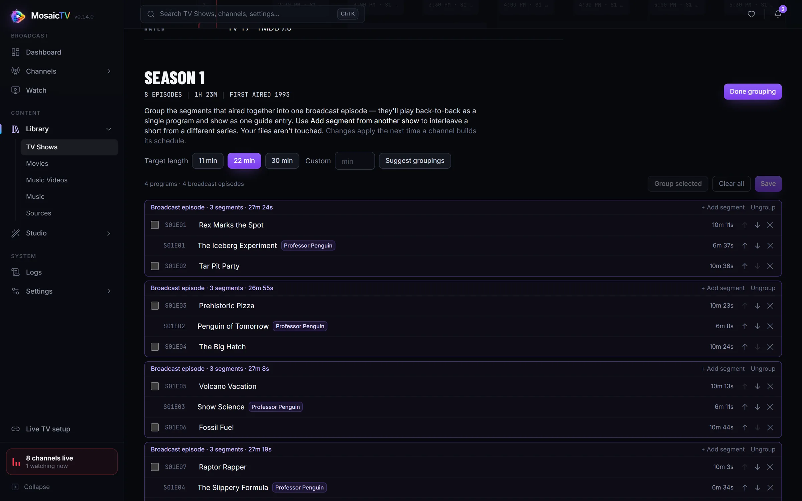
And the guide says what's really on.
The up-next card lists every segment of the broadcast episode coming up — the borrowed short included — and the show it was borrowed from marks which of its episodes air inside another.
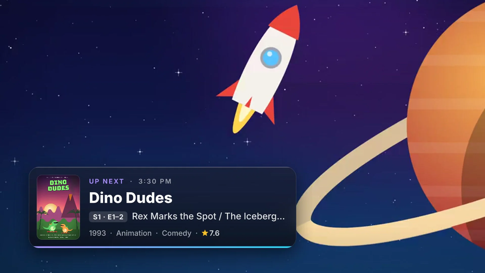
Runs like a station. Edits like a playlist.
A 24/7 rotation, time blocks for the days and hours that are different, and a broadcast clock that starts shows on the :00 and :30. Change anything, any time — the guide follows from the next program, and every show carries on from the episode it was up to.
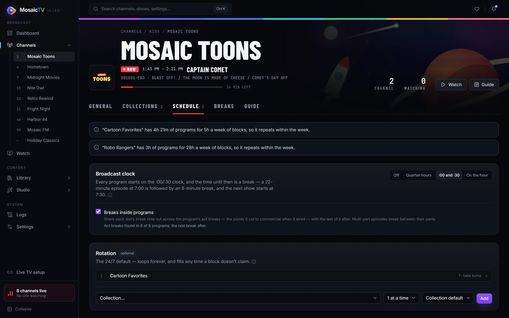
The Schedule tab warns you before it airs — a block that will run into an exact-time start, a collection too short for its blocks — and the clock shares each slot's break time out across the program's act breaks.
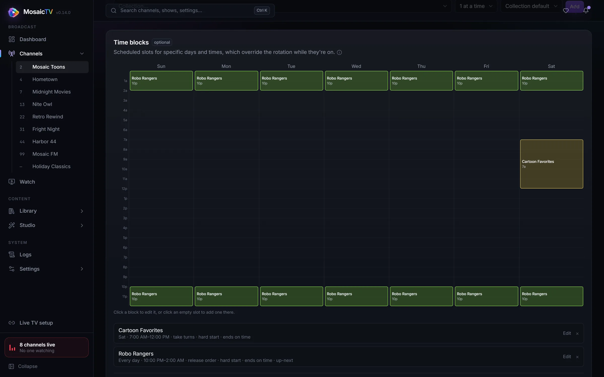
Blocks override the rotation for set days and times. A soft start waits for the program to finish; a hard start begins on the dot. Each block can have its own order, logo, breaks and up-next card.
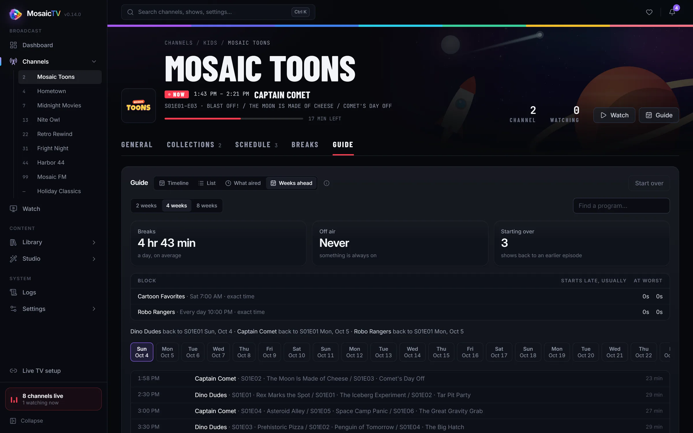
Weeks ahead lays the schedule out a month at a time — what's on any day, and how late each block really starts. What aired keeps 90 days of history.
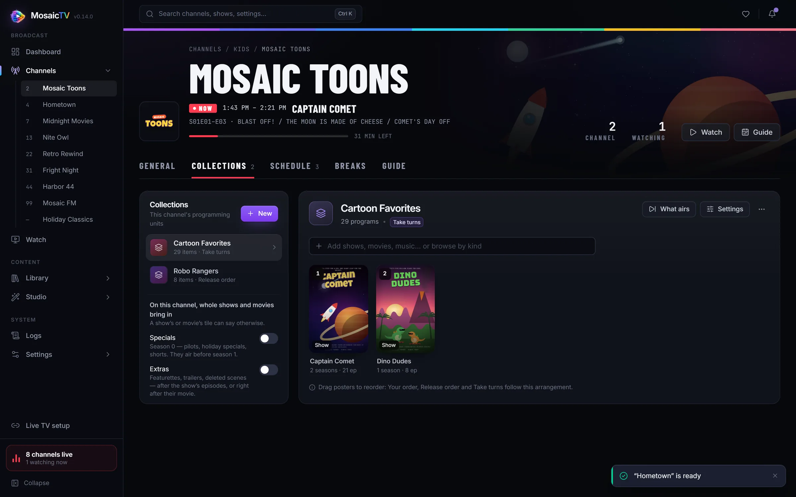
Collections are whole shows, seasons, episodes, movies, artists or albums — or a smart filter like “every horror movie”. Five playback orders, each explained as you pick it, with a preview of the first airings.
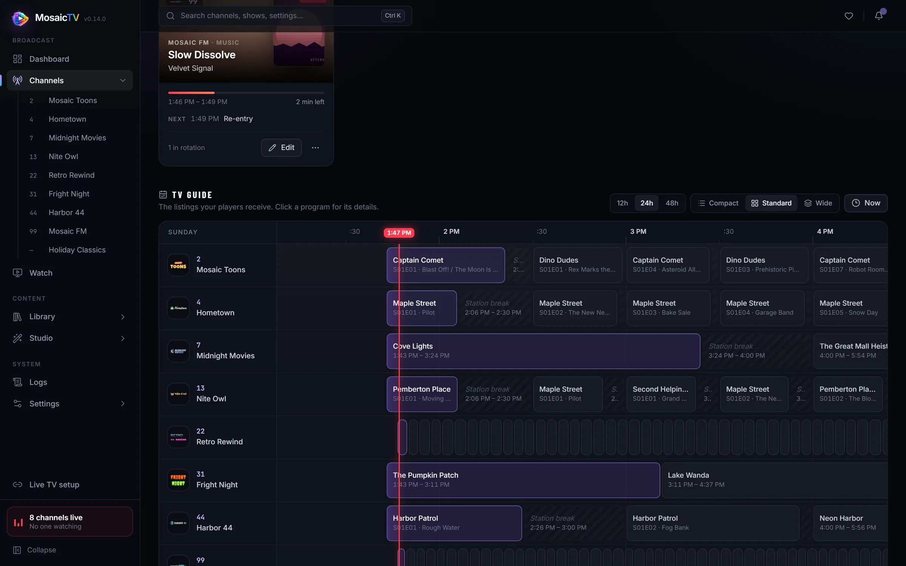
The full guide, with a pinned time ruler and a red now-line — and it's the same XMLTV your players get.
Breaks that look like a network made them.
Breaks cover the time between programs so blocks start on time. MosaicTV makes each channel's idents from its own logo, with a music bed — or plays your bumpers and old commercials from a folder, a fresh mix every break.
Commercial breaks where the commercials were.
- Act breaks found for you — from a file's chapter marks, or from its fades to black and silence when it has none.
- Breaks inside programs: on a clock, each slot's break time is shared across the episode's act breaks, the way it aired.
- One place to set it up. Each channel's Breaks tab shows the next break and what it'll play, which blocks have breaks, and a week map of which ident plays when.
- Per-block idents — a late-night look for the late-night block. Preview six seconds of any ident before you save.
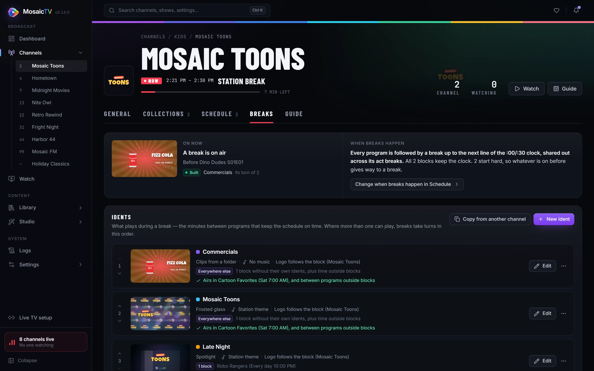
An up-next card worth staying for.
Near the end of a program, a frosted-glass card slides in with what's next: its poster, the episode and its title, the year, genres, rating and the time it starts. Or pick a cable-style bar.
- Glass or Broadcast, in any corner or along any edge, clear of your logo, in three sizes.
- Stays on the picture — on a pillarboxed 4:3 show, the card and the logo sit inside the frame, not out in the black bars.
- Music videos get a matching Now playing card.
- A live preview in each channel's settings, with the channel's real next program.
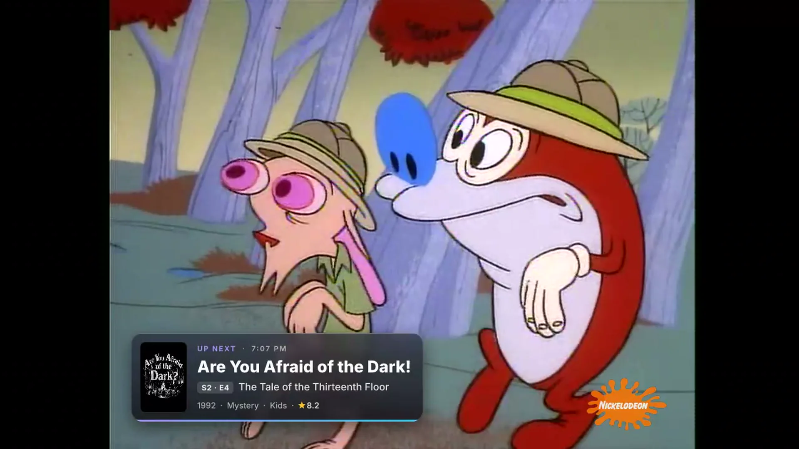
Channel surfing, in a browser tab.
TV mode puts your channels full screen: a banner with what's on and next as you tune in, a guide over the picture, and the arrow keys or a swipe to flip. Cast it to a Chromecast or an Apple TV. Or add the channels to the player you already use.
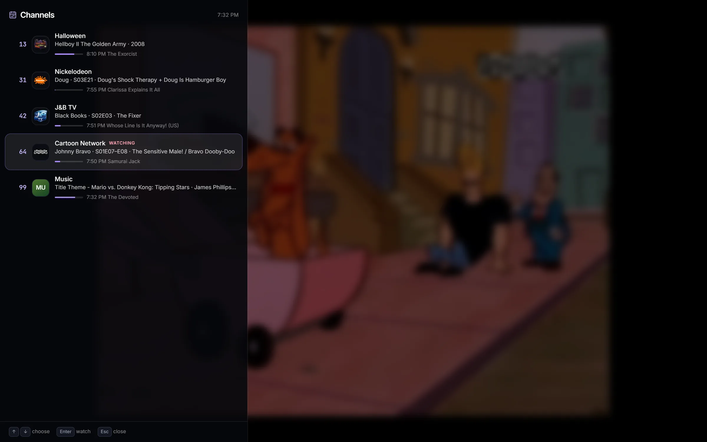
Plex, without Threadfin
A built-in HDHomeRun tuner: give Plex its address and Live TV takes the channels, logos and guide straight from MosaicTV.
Jellyfin, Emby, any IPTV app
Standard M3U and XMLTV. Live TV setup has every address with a copy button and steps for each player.
One encode, any number of viewers
Shared HLS runs one transcode per channel however many people tune in — and only channels being watched are encoded at all.
Music channels with a now-playing screen.
Songs from your own files air over the album art, a spectrum drawn from the song, or its lyrics, lit line by line as they're sung.
- Take turns by artist — a station of forty artists plays one song from each in turn, and shuffle never plays the same artist twice running.
- Filed like a music app: artists, albums and songs by album artist, compilations under Various Artists, disc sets as one album.
- MusicBrainz, Cover Art Archive and LRCLIB fill in albums, covers and synced lyrics — free, no keys.
- What played before and what's next along the bottom, and music videos with their own Now playing card.
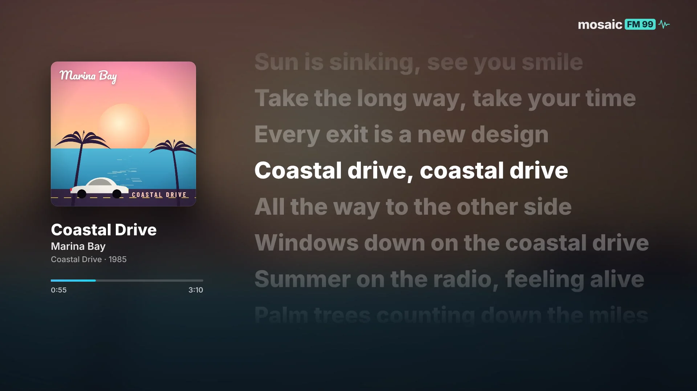
A library that knows what's on.
A scanner reads your folders the way Plex does — .nfo files, the files' own tags, TMDB and TheTVDB — and every title's page shows where it's on the air: the channels carrying it, its next airing, and the evening around it.
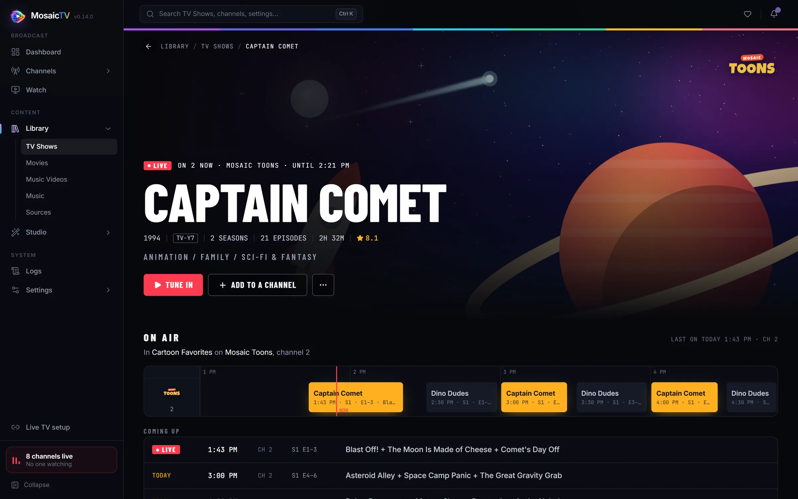
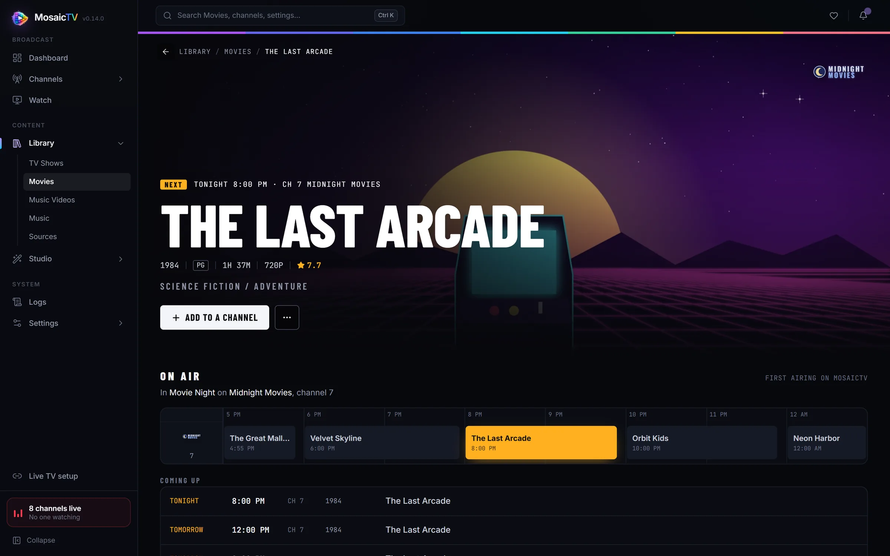
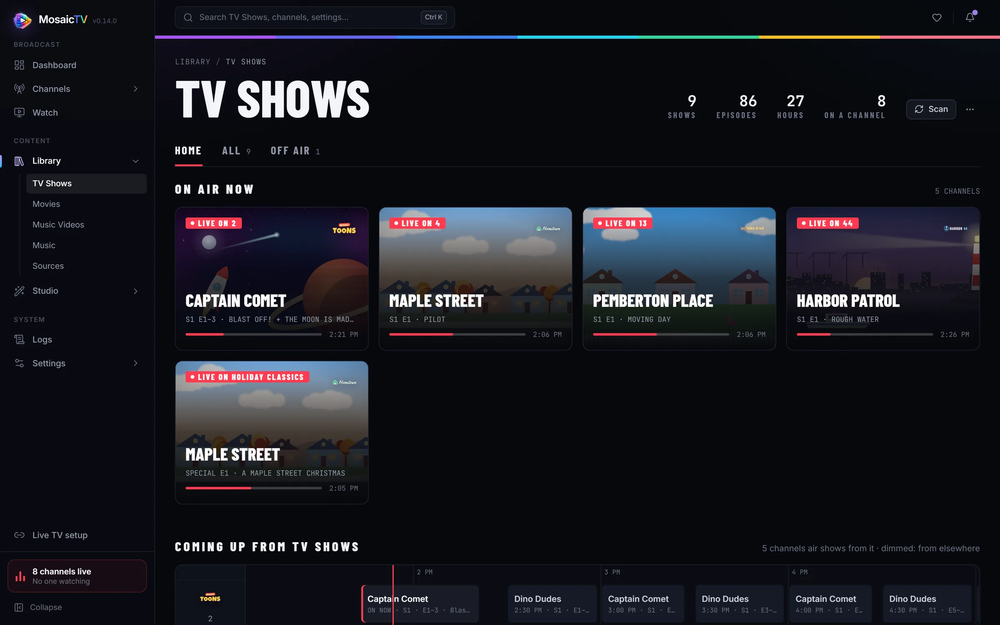
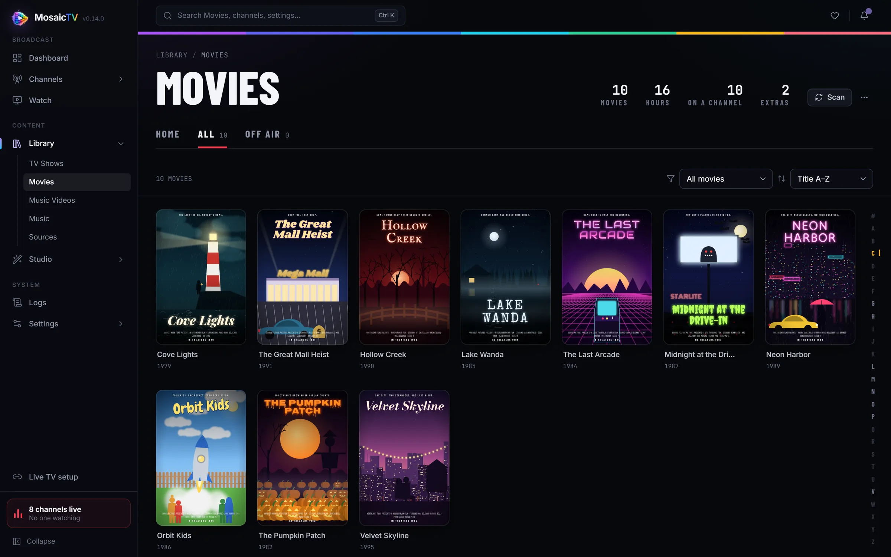
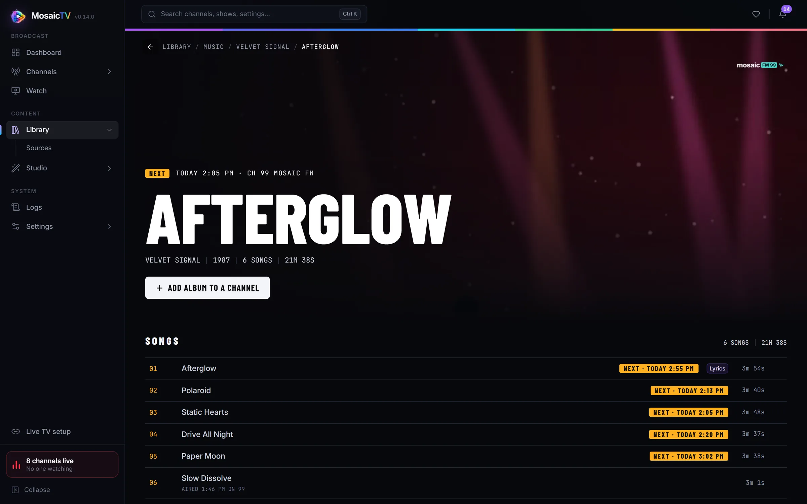
Specials and extras are switched per channel, every title has Add to a channel, and Fix match puts a wrong poster right on either source.
The details a station needs.
Search from anywhere
Ctrl/⌘ K finds pages, channels, settings and every show, movie and artist in your library.
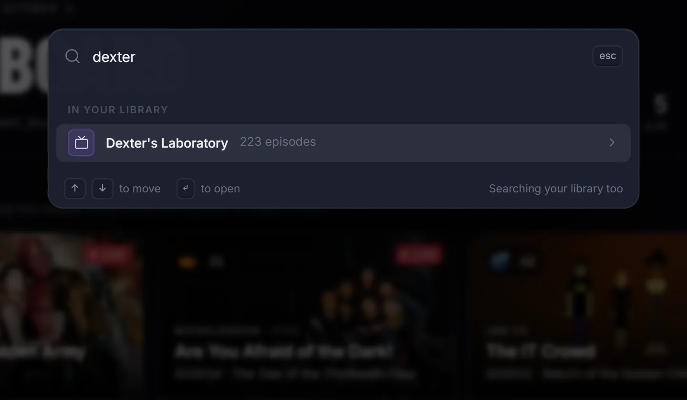
Logos and watermarks
Permanent or every few minutes with fades, any corner and size, previewed live over a frame from your library.
GPU encoding, verified
NVIDIA, Intel QuickSync, VAAPI, AMD AMF or Apple VideoToolbox, each proven by a real test encode on your host — with a clean CPU fallback.
Even volume, your language
Loudness normalization per encoding profile, and a preferred audio language per channel.
Notifications
A bell follows scans, metadata fetches and ident builds with live progress, wherever you are in the app.
What aired
Ninety days of what actually went out on each channel, and whether it streamed cleanly.
Backups and a log
One-click backup of everything that makes your instance yours, and a live log with a download for bug reports.
Safe upgrades
Before any upgrade changes the database it takes a copy, and puts it back by itself if the change fails.
Runs the station from your phone.
The whole app works on a phone — long-press to reorder, Add to a channel from any title — and spreads out on a 4K monitor.
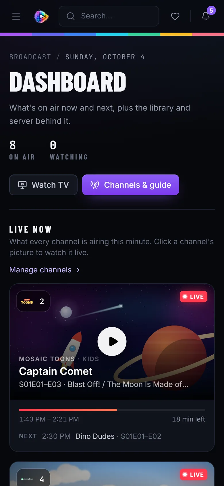
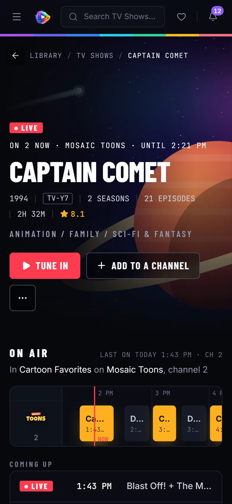
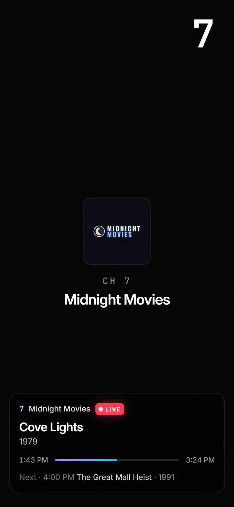
MosaicTV and ErsatzTV
MosaicTV was inspired by ErsatzTV and rebuilt from scratch around a different idea: that a channel should look and feel like broadcast TV, and be simple to set up. Both are free and open source. Here's where they differ.
| MosaicTV | ErsatzTV | |
|---|---|---|
| Cartoons made as shorts | Group any segments into the broadcast half-hour they aired as — including a short from another show. One program in the guide. | Can keep multi-part episodes (Part 1, Part 2) together. |
| Station breaks | Idents generated from your logo (frosted glass, spotlight) with a music bed, or a reel from a folder of bumpers and commercials. | Filler you supply — pre-, mid- and post-roll, tail and fallback collections. |
| Commercial breaks in a show | At chapter marks, or found from fades to black and silence when a file has none. | Mid-roll filler between chapters. |
| Up next | A designed card with the poster, picked with a few clicks and previewed live. | Graphics elements written as YAML templates. |
| Scheduling | A rotation plus time blocks, a broadcast clock, schedule warnings and a weeks-ahead view. | Classic, block, sequential (YAML) and scripted schedules. |
| Library and metadata | Its own scanner, reading .nfo, tags, TMDB and TheTVDB itself — and MusicBrainz and LRCLIB for music. | Plex, Jellyfin and Emby libraries, or local folders read from .nfo files. |
| Watching | Any IPTV player, Plex through its built-in tuner, or TV mode in the browser with casting. | Any IPTV player, and Plex through HDHomeRun emulation. |
| Music | A now-playing screen with album art, a visualizer or synced lyrics. | Songs and music videos. |
| Runs on | Docker on any 64-bit Intel or AMD host. | Windows, macOS, Linux and Docker. |
| Around since | 2026 — new, and moving fast. | 2021, with a large community. |
MosaicTV is for you if…
you want channels that feel like broadcast TV out of the box — real breaks, an up-next card, cartoons in their half-hours — set up by clicking rather than writing schedules.
ErsatzTV might suit you better if…
you want to schedule straight from a Plex, Jellyfin or Emby server, write scripted schedules, or run natively on Windows or macOS.
ErsatzTV details from its documentation, October 2026. Spot something out of date? Tell us.
On the air in ten minutes.
One container with everything in it. Point it at your media, open the web UI, and build your first channel.
- Run the container with your media mounted read-only — MosaicTV never writes to it.
- Add a library and scan it. Add a free TMDB key for posters and details if you like.
- Make a channel: a collection, a rotation, a number. Its guide builds itself.
- Watch in TV mode, or add the M3U and guide to your player.
docker run -d \ --name mosaictv \ --restart unless-stopped \ -p 8688:8688 \ -e TZ=America/Chicago \ -v /path/to/appdata/mosaictv:/app/data \ -v /path/to/your/media:/media:ro \ ghcr.io/tronvondoom/mosaictv:latest
Then open http://your-server:8688. Add --gpus all for an NVIDIA card.
services: mosaictv: image: ghcr.io/tronvondoom/mosaictv:latest container_name: mosaictv restart: unless-stopped ports: - "8688:8688" environment: - TZ=America/Chicago volumes: - /path/to/appdata/mosaictv:/app/data - /path/to/your/media:/media:ro
# On the Unraid terminal:
curl -L -o /boot/config/plugins/dockerMan/templates-user/my-MosaicTV.xml \
https://raw.githubusercontent.com/TronVonDoom/mosaictv/main/unraid/my-MosaicTV.xml
Then Docker → Add Container → MosaicTV, point it at your media share and set your timezone.
:latest is the newest release; :edge follows every change. Full guides in the
install docs.
Good to know
Is it really free?
Yes — every feature, for everyone, under the GPL-3.0. If it earns a spot on your server, you can sponsor it, but nothing is held back.
Will it change or move my files?
No. Mount your media read-only; MosaicTV only reads it. Broadcast episodes, matches and everything else live in its own database.
What hardware do I need?
Any 64-bit Intel or AMD machine that runs Docker — Unraid, a NAS with an Intel or AMD CPU, Proxmox, any Linux box. Only channels someone is watching are encoded, so a CPU copes with a viewer or two; a GPU makes light work of more. There's no ARM image yet.
Does it work with Plex?
Yes. MosaicTV includes an HDHomeRun tuner: enter its address in Plex's Live TV & DVR setup and Plex takes the channels and guide directly — no Threadfin or xTeVe in between.
Can I watch away from home?
Use a VPN into your home network, such as Tailscale or WireGuard. MosaicTV has no login, so don't expose its port to the internet.
Do I need TMDB or TheTVDB?
No. .nfo files and local artwork work on their own. A free TMDB or TheTVDB key adds posters, backdrops, cast and episode details for everything else.
Where do these screenshots come from?
A demo library made for this site: every show, movie, band and commercial here is made up, with artwork and music generated for it. The screens are MosaicTV 0.14 running on that library.
Your channels are waiting.
Remember channel surfing? Bring it back — with every channel made from your own library.